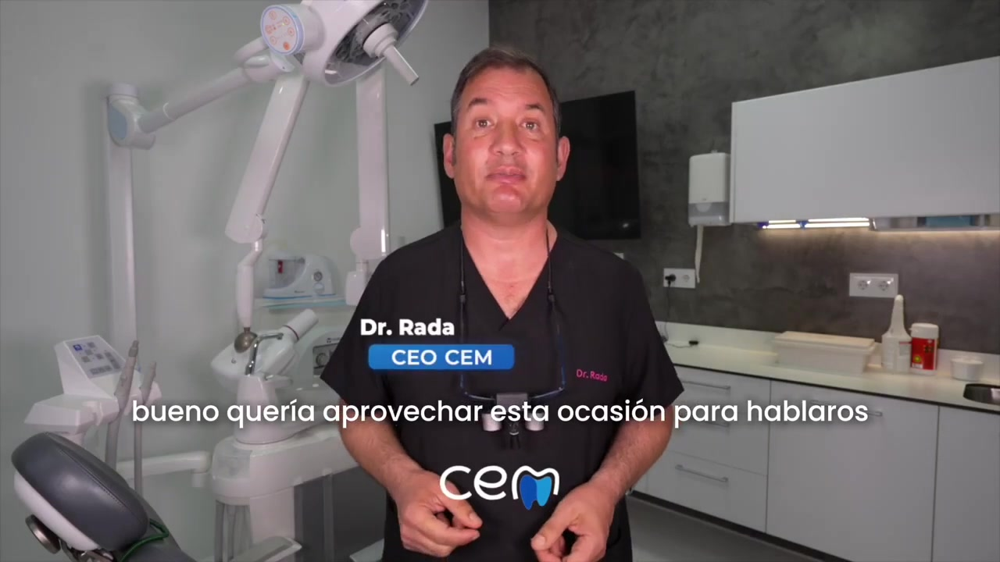
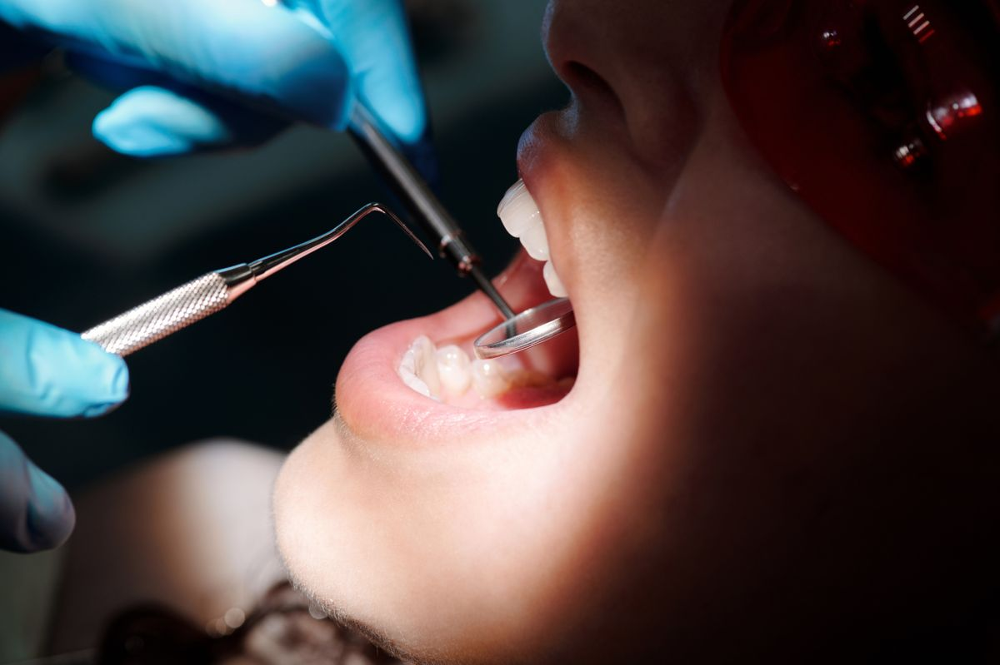

Óxido nitroso (gas de la risa)
Sedación inhalatoria suave que respiras con una mascarilla. Notas una relajación agradable y, al terminar, el efecto desaparece rápido. Perfecta para nervios y reflejo de náusea.

Sedación consciente en Carabanchel
¿Llevas años posponiendo al dentista por miedo? Con la sedación consciente el tratamiento es tranquilo, cómodo e indoloro. Te atiende el Dr. Rada, con más de 30 años de experiencia en Carabanchel.
Valoración sin compromiso · financiación a tu medida

No estás solo
El miedo al dentista (odontofobia) hace que muchas personas aplacen tratamientos durante años, y el problema solo crece. La sedación consciente rompe ese círculo: te permite tratarte con tranquilidad, sin ansiedad y sin dolor, para que recuperes tu salud bucal a tu ritmo.
Cómo te ayuda
Una técnica segura que te mantiene relajado y consciente durante el tratamiento. Combinada con anestesia local, elimina por completo el dolor y la ansiedad, y te recuperas en poco tiempo.
Sedación inhalatoria suave que respiras con una mascarilla. Notas una relajación agradable y, al terminar, el efecto desaparece rápido. Perfecta para nervios y reflejo de náusea.
Un comprimido relajante pautado por el profesional que reduce la ansiedad antes de la cita. Sencilla y cómoda para tratamientos de consulta.
Controlada por un anestesista y con monitorización continua. La opción más profunda dentro de la sedación consciente, ideal para cirugías largas o ansiedad intensa.
Tu seguridad, lo primero
Sí. Es una técnica consolidada que realizamos con control profesional y monitorización en todo momento. Antes de aplicarla valoramos tu historia clínica para confirmar que es adecuada para ti y elegir la opción más segura según tu caso.
¿Para quién es?
Si la sola idea de sentarte en el sillón te genera angustia, la sedación te permite tratarte tranquilo. Descubre más sobre el miedo al dentista.
En cirugías y implantes dentales aporta máxima comodidad, para que vivas la intervención con tranquilidad.
Si las arcadas te impiden abrir la boca con calma, la sedación relaja ese reflejo y facilita el tratamiento.
Permite concentrar más trabajo en menos sesiones, con tranquilidad para ti y precisión para el equipo.
Cuando la anestesia local no basta para calmar los nervios, la sedación marca la diferencia.
Aunque no tengas fobia, mucha gente elige sedación simplemente para vivir la consulta de forma relajada.
Cómo funciona
Revisamos tu historia clínica y tu caso, y te explicamos qué tipo de sedación te conviene.
Aplicamos la sedación y la anestesia local. Estás relajado, consciente y sin dolor en todo momento.
Supervisamos tu recuperación y te damos pautas claras. Con óxido nitroso, vida normal enseguida.
Opiniones reales
★★★★★ 4,6 · Opiniones de pacientes de Carabanchel
Tenía pánico al dentista y con la sedación consciente ni me enteré. Profesionales y muy cercanos.
Implantes con sedación, sin enterarme. Profesionales de verdad y muy cerca de casa. Mi clínica de confianza.
Llevaba años evitando ir y aquí me trataron con una paciencia increíble. El Dr. Rada te lo explica todo.
Preguntas frecuentes
Pide tu valoración de sedación consciente en Carabanchel. Te atiende el Dr. Rada y vamos a tu ritmo.
Contenido revisado por el Dr. José Rada, odontólogo colegiado nº 11.124 · Última revisión: julio de 2026